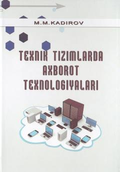

TTTexnik tizimlarda dasturlash texnologiyalari va C++ Builder muhiti bo'yicha o'quv qo'llanma.
Ushbu darslik texnik tizimlarda axborot texnologiyalari, xususan dasturlash texnologiyalari va Borland C++ Builder 6 muhiti haqida ma'lumot beradi. Kitobda zamonaviy dasturlash tillari, dasturiy konstruksiyalar va vizual muhitda dasturlash jarayonlari misollar yordamida tushuntirilgan.